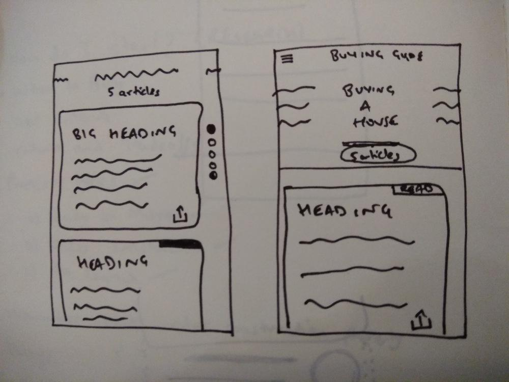

One of my major projects at Housing outside Housing Labs was the Buying Guide.
The idea behind the buying guide was to make a simple step by step reference for new home buyers
At the beginning of the project, I was approached by the Product Manager who told me that they have come up with a 30 page document as the buying guide. Now that's a lot of information. Who has the time to read that in an app?
I realized that we need to go through all this information and divide it into different stages of house buying. These stages were, Finding a House, Home Loans and Finance, Choosing a Home and Tax Implications. All of these would contain concise sub information regarding the relevant topics. This would be aided by interactive illustrations and explanations.
But while doing this I also wanted to give the user an easy way to navigate and a sense of accomplishment while they complete the buying guide.
Here are some early ideas that I sketched out.

I then translated these sketches into higher fidelity mockups.
After my initial explorations of the UX, I shared my work with the incredibly talented Saptarshi Prakash. Let's have a look with the final outcome after the visual cycle.